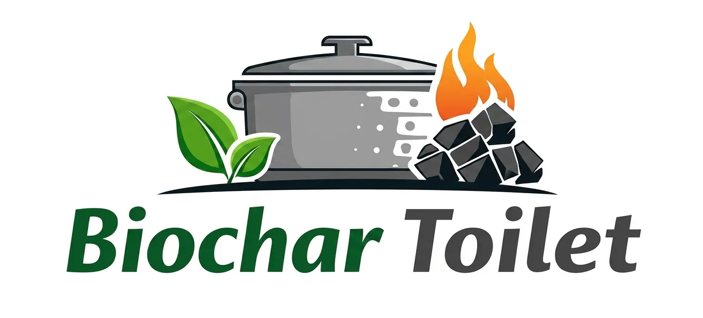
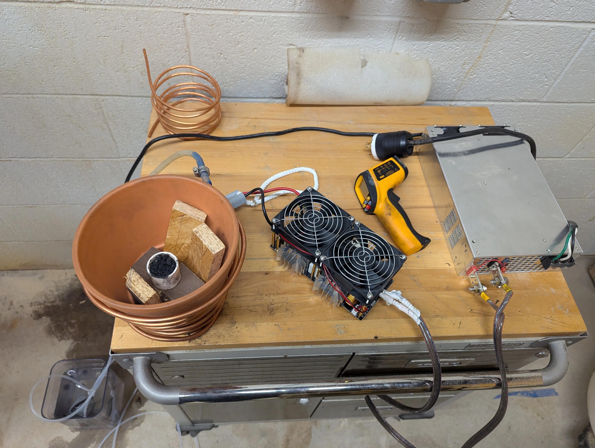
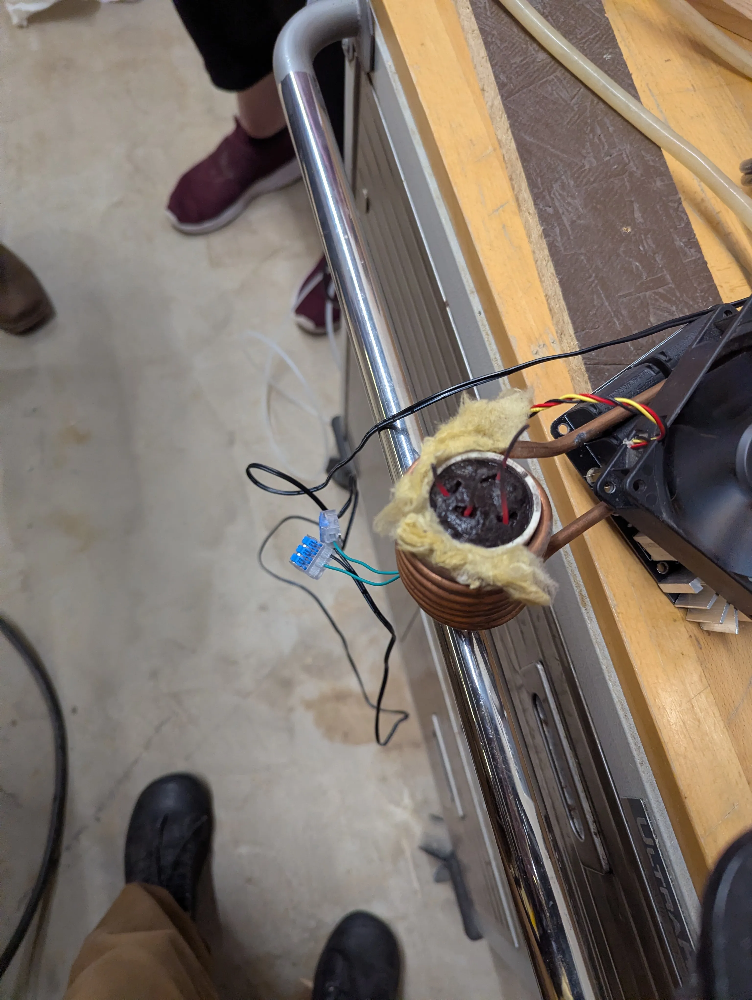
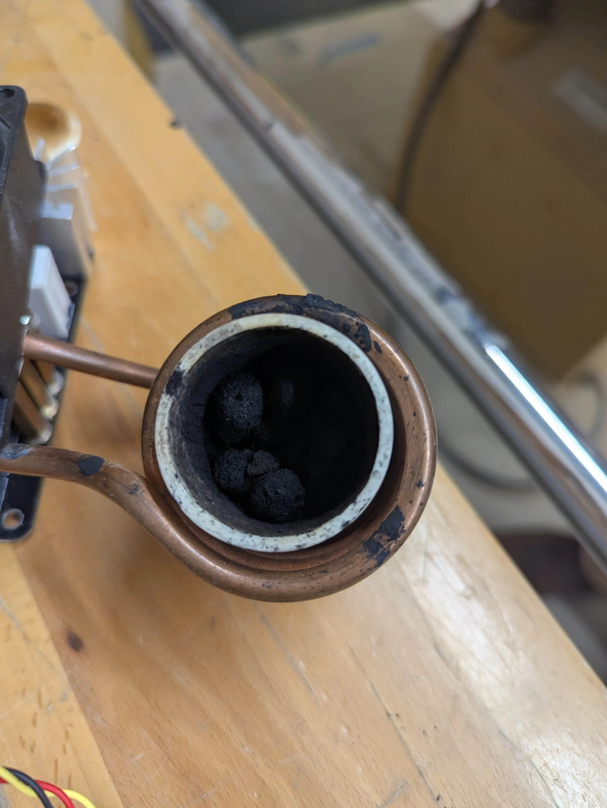

Open-Source Sanitation & Global Resource Recovery
Over 2.5 billion people lack access to basic sanitation. Traditional solutions fail because:

How the Biochar Toilet compares to existing infrastructure:
| System Type | Required Inputs | Primary Output | Key Limitations |
|---|---|---|---|
| Traditional Sewage | Massive Potable Water, Heavy Chemical Treatment | Blackwater / Sludge | High cost; strictly prohibits grease, oils, & medications. |
| Composting | Bulking Agents (Sawdust), Aerobic Oxygen, Time | Humus / Low-Grade Fertilizer | Slow processing; pathogen risk if mismanaged. |
| Incineration | High Electricity/Propane, Ventilation | Sterile Ash, CO2 Emissions | Extremely high energy cost; destroys nutrient value. |
| Biochar Toilet | Medium Electricity (Pulse Heating), Sealed Chamber | Sterile Biochar (Carbon Sink) | Requires efficient drying algorithms to manage high liquid volumes affordably. |
Traditional sewage works well in wealthy, water-rich urban centers, but it fails structurally and environmentally when deployed in arid or developing regions. Decentralized pyrolysis solves these macro-level issues.
Flush systems waste billions of gallons of purified drinking water just to transport waste. The Biochar Toilet requires zero external water, making it viable for communities facing severe drought or arid climates.
Sewage requires billion-dollar investments in subterranean pipes, pump stations, and treatment plants. Our system is an off-grid appliance that can be dropped anywhere without civil engineering.
During heavy rains or system failures, traditional sewage treatment plants frequently overflow, dumping raw blackwater into rivers and oceans. A closed-loop dry system eliminates this risk entirely.
Municipal sewage treatment produces a toxic biosolid "sludge" that must be landfilled or heavily processed. Pyrolysis transforms the same inputs into a high-value, safe agricultural asset.
While composting is mechanically simpler, it introduces severe biological risks and operational complexity. The Biochar Toilet fronts the complexity in the engineering phase to ensure a rapid, foolproof user experience.
Composting requires precise adherence to moisture control and turning schedules for months; mismanagement creates a biohazard. Pyrolysis achieves 100% mechanical sterility in minutes.
Composting demands a constant supply of external carbon bulking agents (like sawdust or peat). This system operates as a closed loop, using only the waste and our reusable magnetite matrix.
Complex synthetic compounds, such as antibiotics and hormones, pass straight through a biologically fragile compost system. High-temperature pyrolysis physically destroys these structures.
Standard composting creates a low-grade humus that eventually decomposes, releasing methane. Pyrolysis produces highly stable biochar that sequesters carbon and retains 50% more moisture in arid soil.
Incineration toilets exist, but they use brute-force thermal destruction. The shift from incineration (burning) to pyrolysis (heating in the absence of oxygen) creates a fundamentally different energy profile and output.
Incinerators run heating coils continuously until waste is turned to ash, demanding immense power (often propane or grid-tied 240V). Our algorithm targets specific phase changes (drying vs charring) to drastically reduce energy consumption.
Incineration burns carbon, releasing large amounts of CO2 directly into the atmosphere. Pyrolysis stops the reaction before combustion, locking the carbon into a stable, solid matrix instead of off-gassing it.
The primary output of an incinerator is sterile but agriculturally useless ash. Biochar retains microscopic porosity and trace minerals, transforming it into a "soil sponge" that improves crop yields.
Standard incineration loses massive amounts of energy heating the ambient air around the waste. Our induction system generates heat directly *inside* the waste matrix via the magnetite susceptor.
To provide an efficient, inexpensive, and sanitary way to dispose of human fecal matter in isolated communities.
The Biochar Toilet hits the perfect balance between the rapid speed of incineration and the low energy profile of composting, while retaining agricultural nutrients.
The core challenge is energy efficiency. Drying and charring are two separate energy stages. The system must detect exactly when moisture has been eliminated to minimize power waste.
The transition from "drying" to "charring" is triggered by detecting the physical state change of water inside the vessel. When the pressure curve plateaus while the temperature continues to rise, the system safely cuts power to the drying relays.
Transitioning from resistive heating to Pulsed Induction Heating to overcome the thermal inefficiency of processing high liquid volumes.
Live Prototype Documentation:
View Induction Album


The induction system goes beyond basic contactless heating. By utilizing a magnetite and clay-based medium as the magnetic susceptor, we achieve major breakthroughs in processing physics:
The clay acts as a highly effective absorber, distributing liquid waste (feces and urine) evenly throughout the entire substrate. This creates an optimal surface area to wet mass ratio.
A relatively low induction frequency provides even volumetric heating (except at the containment walls). This triggers rapid boiling and steam generation, drastically accelerating the dewatering phase.
Magnetite has a fixed Curie temperature. Once the substrate reaches a specific thermal threshold, it naturally loses its magnetic properties and stops absorbing induction energy.
This provides a physical failsafe against thermal runaway, independent of software.
Pulsed induction heating introduces significant, localized peak current draws. Because this system is designed for isolated environments without reliable grid ties, continuous high-amperage draw is impossible.
To solve this, the thermal architecture is paired with a local energy buffering system.
For open-source hardware to achieve global equity, it must be replicable. We engineered the Biochar Toilet using accessible toolchains and standard components so it can be built and serviced in local makerspaces around the world.
The logic core relies on the ubiquitous ESP32 microcontroller. Custom PCB schematics and routing for the solid-state relay integration are drafted entirely in KiCad to ensure anyone can modify or print the boards.
The dryness monitoring algorithms and hardware control loops are written in C/C++ and managed using PlatformIO, providing a consistent compilation environment regardless of the user's local operating system.
Instead of relying on proprietary manufacturing, non-heat-critical enclosures and mounting brackets are designed parametrically for standard FDM 3D printing, making them easily reproducible in community-driven fabrication studios.
The byproduct of this process is not waste—it is a climate-positive resource. High-temperature pyrolysis locks carbon into a stable matrix that prevents methane release.
This hardware is being developed in the public domain for global equity. We need contributors for:
Thank you for supporting Open-Source Sanitation.
Special thanks to Public Invention and Invention Coach Robert Read
Lawrence Kincheloe | Peter Shryock | Hardhik Pyla
www.pubinv.org